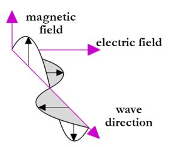
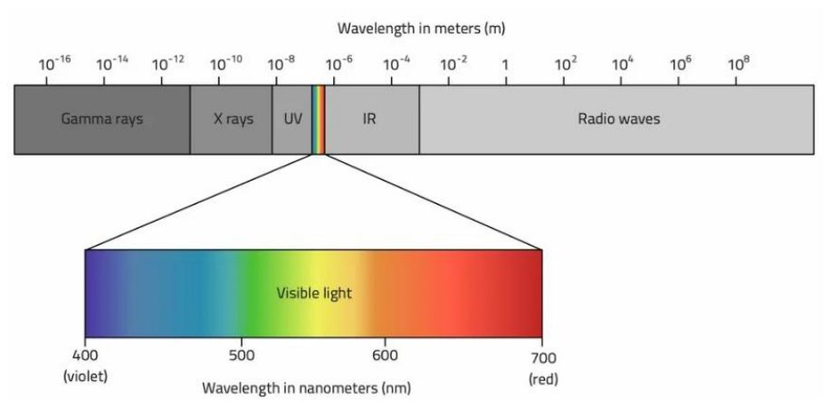
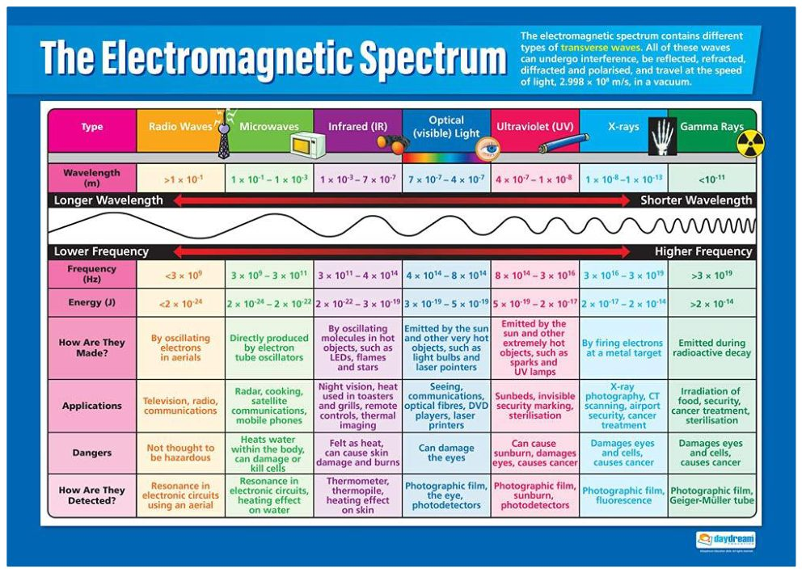
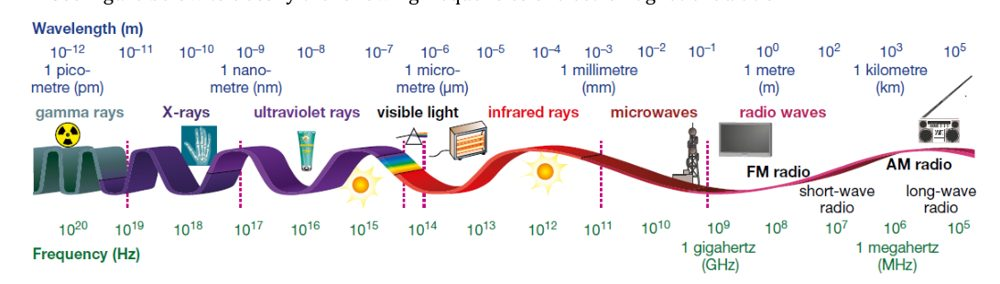

1.3 Applications of waves: light
Electromagnetic radiation (EMR), or "light", travels as waves and transfers energy from one place to another.
- EMR waves are transverse waves made of oscillating electric and magnetic fields.
- They are non-mechanical, travelling through a vacuum at 300 000 km/s (300 000 000 m/s, 3.00 × 108 m/s).
- Depending on the wavelength, EMR is given different names. The continuous spectrum has seven regions: radio, microwave, infrared, visible, ultraviolet, X-ray and gamma.



Put the regions of the EM spectrum in order from longest wavelength (lowest frequency) to shortest wavelength (highest frequency).
→ → → → → →
Making light
There are many ways to make light, both natural and artificial. Light production can be divided into two broad categories: incandescence and luminescence. Note that many objects that seem to produce light are actually non-luminous. For example, the Moon simply reflects the Sun's light.
| Incandescence (light produced due to heat) | Examples | Luminescence (light from a chemical or electrical process) | Examples |
|---|---|---|---|
| Combustion | Candles, Bunsen burner | Bioluminescence | Glow worm, angler fish |
| Heated | Tungsten filament globe | Electrical discharge | Lightning, taser, fluorescent lamp |
| Celestial | Stars, supernova | Chemiluminescence | Cyalume (glow sticks) |
| Atmospheric | Aurora, meteorite | Electroluminescence (light from an electric current passed through a substance) | Laser, LED |
| Nuclear | Atomic bomb flash | Radioluminescence | Radioactive paint (e.g. radium) |
Section 1.3: Key summary questions
Identify each source as incandescence (I), luminescence (L) or non-luminous (N).
| Source | Light production |
|---|---|
| Star | |
| Laser | |
| Glow worm | |
| Mars | |
| Candle |
Use the figure to classify each frequency of electromagnetic radiation.

- 1.0 × 106 Hz:
- 1.0 × 1014 Hz:
- 1.0 × 1022 Hz:
- 1.0 × 1010 Hz:
- 1.0 × 1016 Hz:
- Which of these frequencies is the highest?
- Which of these frequencies has the shortest wavelength?
1014 Hz is at the boundary between infrared and visible light on the booklet's figure (visible light is about 4–7.5 × 1014 Hz), so either answer is accepted. The highest frequency (gamma) always has the shortest wavelength.